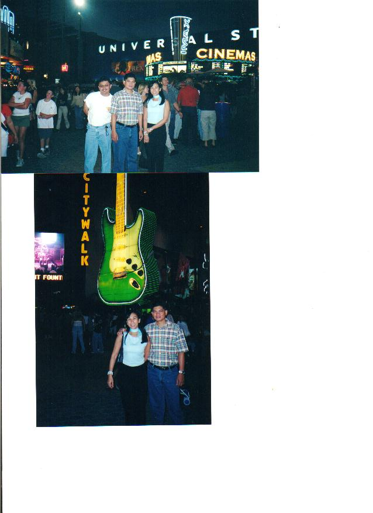
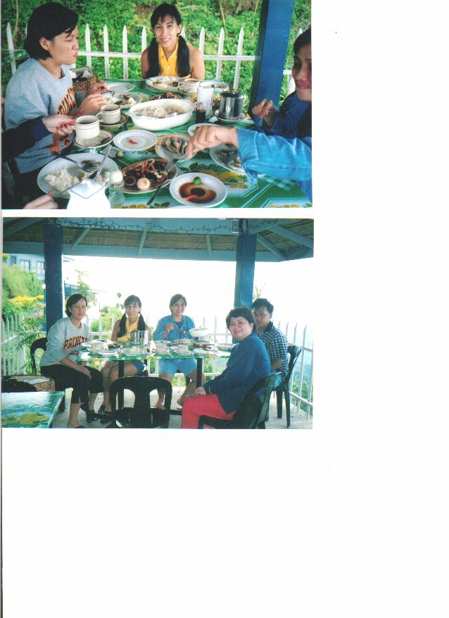
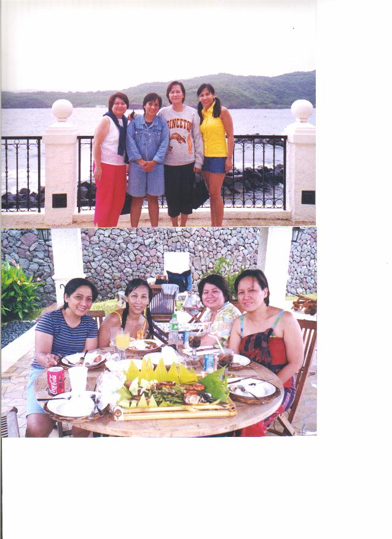
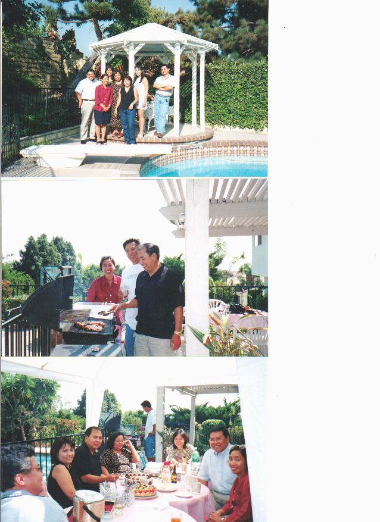
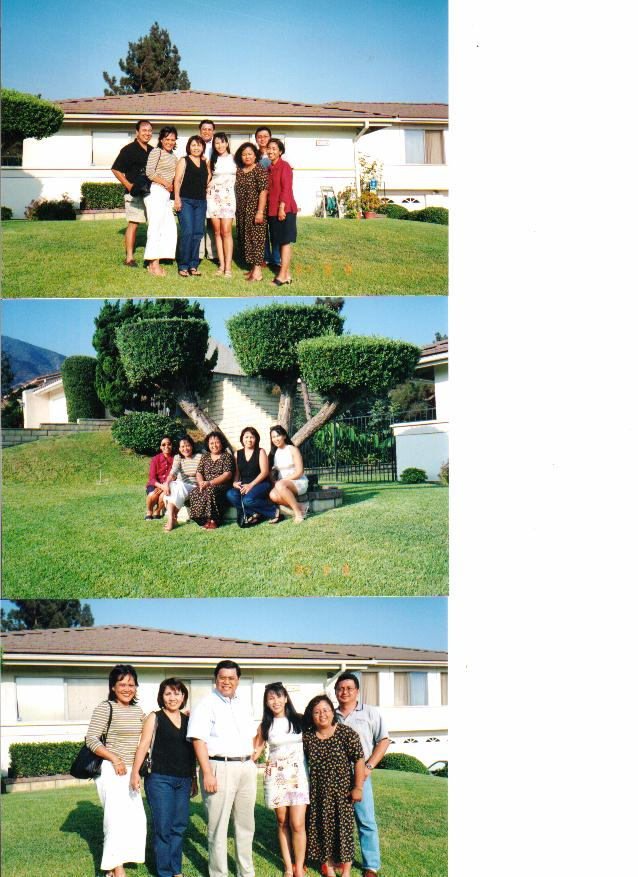
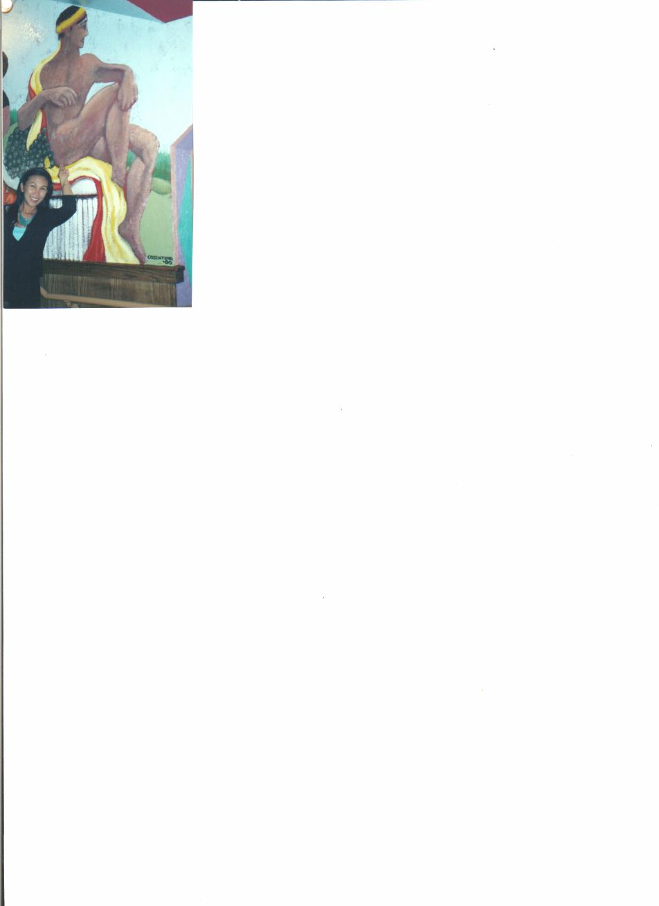

Buddy in LA, Tesz in Tagaytay, Tetz in LA
Return to Home Page
From: "Tesz M"
Date: Thu Oct 18, 2001 1:54 pm
Subject: photo album
Here's my assignment na matagal nang binalak,at least,tapos na din.
Tamad na kong magkwento so bahala na ang iba doon,taga-scan lang ako.
Ang first batch ng photos ay nang magpunta si Buddy sa LA .

2nd batch,nang mag-outing kami nila Iris.Nagbreakfast muna sa Tagaytay tapos
nagswimming sa Punta Fuego,Batangas.Iris,bahala ka nang magkwento nang mga kinain natin. :)


3rd batch,nang dumating si Tetz sa LA.Doon kami sa resort ni Tela.Puro kain din.Bahala na ulit kayo
magkwento.


Last photo-since makulit si Art sa kakamention ng "Papa" ko,ayan,para hindi na
kayo mag-isip,ini-scan ko na ang photo namin ng aking "Papa".

Okay,hello to everyone.Wag sana kayong mapagod sa "photo album".
It's either tahimik ang group or wala akong natatanggap na emails.Paki-explain
na lang,Jaime.
Take care!!! ;)
Message 4875 of 4875
From: "Iris"
Date: Thu Oct 18, 2001 6:23 pm
Subject: Re: [qcshs-75] photo album
Dear Batchmates,
Since ako daw ang magkukwento, so here goes....
Noong July pa kami nagouting sa Punta Fuego in Batangas. Since it was only a
day trip we left Manila around 5:30AM. We reached Tagaytay around 7AM kaya
ayun doon kami nagbreakfast ng tapa at tawilis.
Umuulan by the time we reached Punta Fuego but it was okay kasi konti lang ang
tao. Sarili namin ang "infinity pool" and the place is very nice. We ate our
lunch by the poolside at puro inihaw ang kinain namin.
We left Punta Fuego around 3PM because we wanted to see MayaMaya Rsort kaya
lang nalagpasan namin. We went to Taal Vista na lang then went to Tagaytay
Market.
When I was in Manila this October, I was able to talked to Raul and he is
recovering from his illness - he already lost 12 lbs but he is still resting in
his house. Once in a while pagkailangan daw siya sa office, pumupunta pa rin
siya.
Nagkita kami nila Delta, Connie & Tesz this Oct. when I was in Manila and just
talking about the coming Christmas Party for our batch this December.
So far ang suggested date will be on Dec 28,2001(we always hold our reunion on
the last working day of the year). Naghahanap pa ng venue - kaya guys, kung
meron kayong alam na place na convenient for everybody, relay ninyo na lang kay
Delta.
Sa mga batchmates abroad, meron ba sa inyong uuwi this Cristmas, if so please
inform us so can coordinate our schedules.
Iris